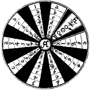
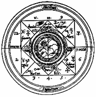

|
|
LA
FILOSOFIA BRUNIANA
Infinità dell'Universo e infinità di Dio |
|
|
Tra i testi
più rappresentativi della filosofia cosmologica di Giordano Bruno, vi sono La cena delle
ceneri e De infinito, universo et mondi, in cui sono
sviluppate le sue idee anti-geocentriche di
universo infinito e molteplicità dei mondi.
La cosmologia
visionaria di Bruno, nello stesso periodo in cui Copernico comincia appena a gettare le
basi del proprio eliocentrismo, preannuncia la successiva teoria di Keplero e i fondamenti
dell'astronomia moderna. |
|
|
|
|
|
1 - La crociata di Bruno
contro l'aristotelismo medievale |
Giordano Bruno rappresenta uno dei più
ferventi difensori del neoplatonismo contro le idee razionalistiche ed empiriche di
Aristotele. Egli si oppone alla filosofia naturale e alla conoscenza attraverso i sensi
sostenute da quest'ultimo, tesi delle quali si impegna fortemente a dimostrare
l'assurdità. Sconvolgendo i pensatori della sua epoca, ancora sotto il giogo di un
pensiero universale conforme all'idea cristiana, Bruno non esita a rifiutare completamente
la concezione aristotelica di un mondo chiuso, allorquando la Chiesa attinge da essa la
propria spiegazione della fede, non tollerando alcun eventuale allontanamento da tale
idea. Non bisogna dimenticare che nel periodo in questione, tutto ciò che non proviene da
Aristotele o che tende a contrastare la sua filosofia viene immediatamente tacciato di
eresia. |
|
| La
versione ufficiale descrive l'Universo come un disco situato al centro di una sfera
celeste, al di sopra della quale ruota il sole e nella quale la luna e le stelle hanno una
posizione fissa. L'Uomo è l'unica creatura di Dio. A tale visione "precaria",
Bruno risponde che "ci sono soli innumerevoli e un numero infinito di terre
orbita attorno a quei soli, così come i sette che noi possiamo osservare orbitanti
attorno al sole che è vicino a noi. Tali mondi sono abitati da esseri viventi." |
|
| 2 - Infinità dei mondi e di Dio |
Caparbio e audace, Bruno attacca la suddetta
versione ufficiale, sostenendo che "chi nega l'effetto infinito, nega la
potenza infinita". |
|
Nel momento in cui Copernico annuncia la
propria teoria dell'eliocentrismo, in base alla quale le sfere celesti, tra cui la Terra,
ruotano attorno al sole, situato al centro dell'universo, Bruno va ancora oltre. Se
Copernico, pur ammettendo il movimento della Terra, parla della sfera delle stelle fisse
come di un elemento immutabile e statico, Bruno spiega che si tratta di un'illusione
prodotta dalla rotazione del nostro pianeta. |
|
Bruno rifiuta quindi l'idea di una
cosmologia finitista, alla quale Copernico rimane invece legato, ed espone la propria
concezione di un universo infinito. Egli, in qualche modo, svuota le teorie di Copernico
da ciò che vi rimane dell'influenza aristotelica e spinge l'eliocentrismo fino all'idea
dell'infinità dei mondi, nei quali l'uomo non ha l'esclusiva. |
|
Egli risponde dunque al geocentrismo
cristiano, posizionando l'uomo al centro dell'Universo, con un relativismo estremamente
audace per la sua epoca: "Non vi è né alto né basso, non vi è alcuna
disposizione assoluta nello spazio. Vi sono soltanto posizioni relative le une alle altre.
Ovunque vi è un incessante cambiamento di posizioni relative per tutto l'Universo, e
l'osservatore si trova sempre al centro di tutte le cose". |
|
 |
 |
 |
|
|
| 3 - La filosofia animista |
Alla teoria dei mondi innumerevoli, Bruno
aggiunge l'idea che la natura sia governata da alcuni "spiriti". Secondo lui,
ogni cosa, oggetto, elemento animato o inanimato è dotato di un'anima: "Non vi
è realtà che non sia accompagnata da uno spirito e da una intelligenza". |
|
Opponendosi al determinismo di Aristotele e
alla concezione cattolica, Bruno spiega che l'anima è un principio attivo e interno che
garantisce l'armonia delle cose e che "è l'anima che governa, muove, vivifica,
mantiene e contiene". Il filosofo aggiunge, nell'opera De la causa, principio
et uno, la propria idea di unità: "l'anima dell'uomo e quella delle bestie
sono dello stesso genere, esse differiscono solo a causa di disposizioni esterne".
Tale anima, identica e presente in tutti gli elementi, vitali o meno, è l'anima del
mondo, che è dotata di intelletto proprio e appare come il principio della natura. |
|
Contro l'idea aristotelica della
divisibilità della materia fino a farle perdere la propria realtà, Bruno avanza una tesi
in base alla quale "l'universo infinito presuppone l'esistenza di una materia
costituita da atomi indivisibili". |
|
Inoltre, Jacques Attali vede in lui un vero
e proprio pioniere dell'atomismo, il precursore di Mendeleïev, un visionario della
scienza genetica, dal momento che Bruno scrive nel 1590 che "non è necessario
che vi siano molti generi e forme di elementi minimi, come del resto di lettere, per
formare le innumerevoli specie". |
|
| inizio pagina |
|
|